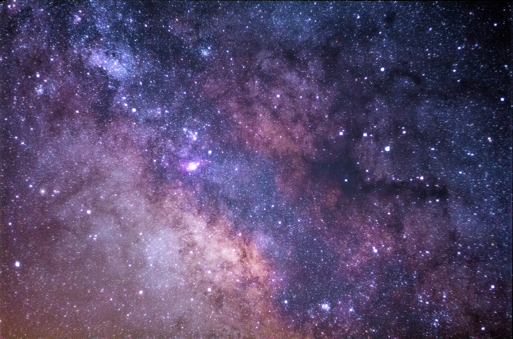
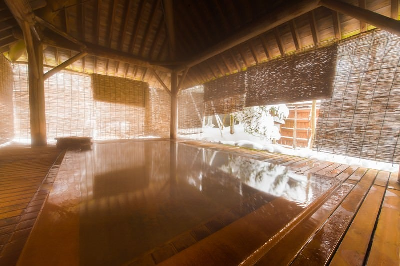
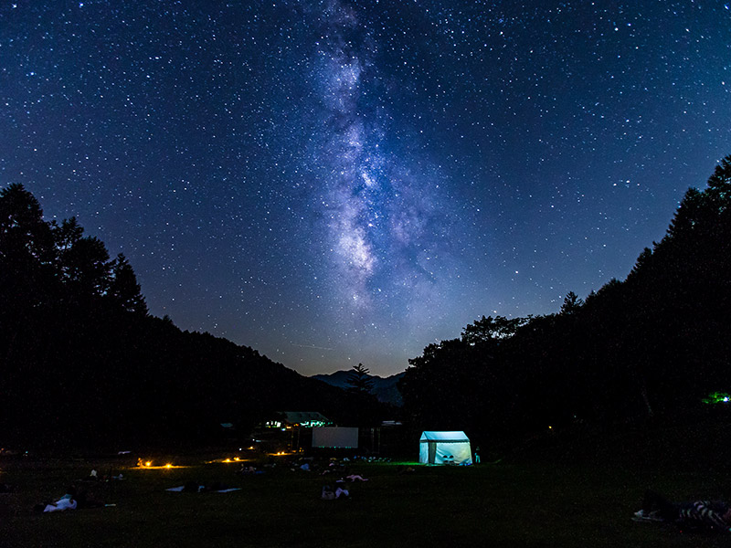
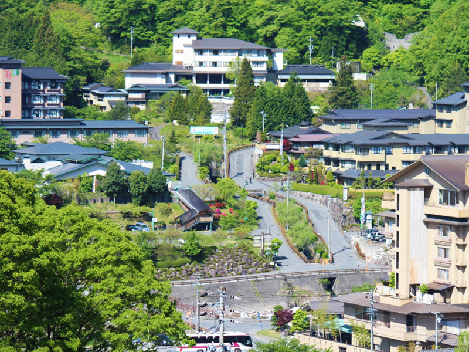
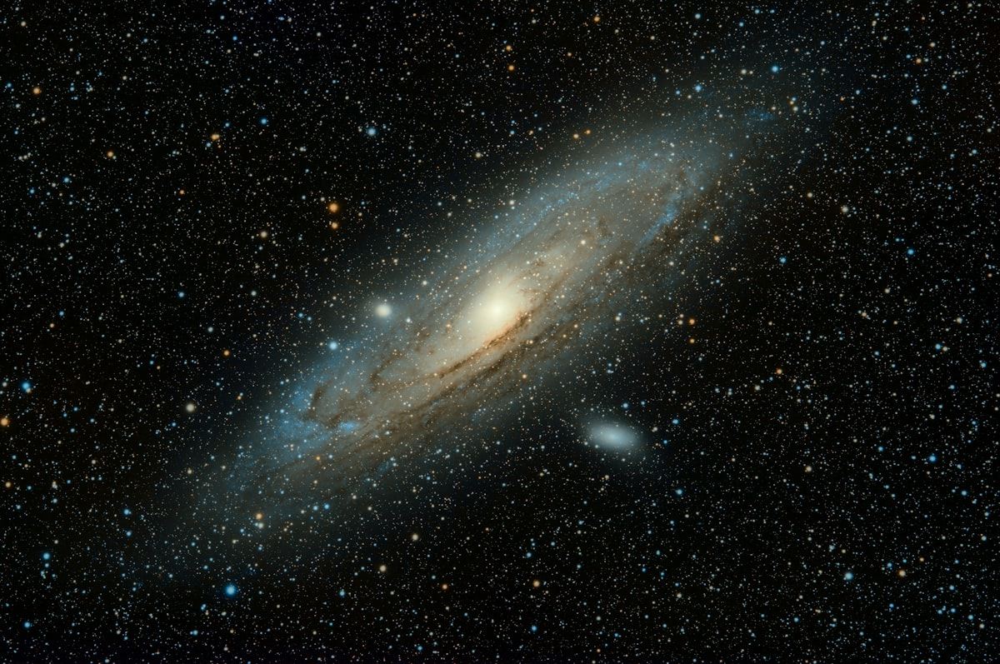

清風苑ゆら（昼神温泉）起点 ／ 夕食後20時〜の星空プラン
36スポットを徹底検証した結論：「浪合パーク20:00セッション」は最善手。ただし"最強コンボ"がある。
浪合パークに勝る暗さのスポットは3つある（馬の背/高嶺山展望台/しらびそ高原）。しかし全て未舗装の山道＋設備なし＋子連れ非推奨。
真の最強プランは「浪合パーク（ガイド付き体験）→ 宿に戻って阿智川散歩 or 露天風呂（余韻）」の2段構え。
浪合パークが休業/曇天なら「阿智川散歩→露天風呂」だけでも十分感動できる。阿智村は町中でも星が見える。
36スポットから5ロール専門家が厳選




1つに絞らず組み合わせるのが正解
この組合せが最強の理由: プロ解説で「知る感動」→ 露天風呂で「浸る感動」。感動の質が異なる2つの体験を連続させる。
車なし・予約なし・コストゼロ。 浪合パークが休業/曇天でもこれで十分感動できる。年中さんが寒い/眠いと言ったら即撤退可。
浪合パーク予約済みなら: 曇天でも室内スクリーンで星空映像＋ガイド解説に変更。「星は見えなかったけど面白かった」の口コミあり。
宿で過ごすなら: 温泉（内湯は翌朝9:30まで）→ 早めに就寝して翌朝の朝市に備える。
判断: 当日15:00に天気確認。曇り→浪合パーク（室内あり）。雨→宿でのんびり（キャンセル無料）。
清風苑ゆらからの距離・暗さ・設備を完全比較
| # | スポット | 距離 | 暗さ | 料金 | 設備 | ポイント |
|---|---|---|---|---|---|---|
| 1 | 朝市広場 | 徒歩5分 | やや明 | 無料 | トイレ○ | 空が開ける。散歩の起点に |
| 2 | 足湯「ふれあいの湯」 | 徒歩5分 | やや明 | 無料24h | 足湯15人 | 温かい足湯＋冷たい星空 |
| 3 | 足湯「あひるの湯」 | 徒歩8分 | やや暗 | 無料〜22時 | 足湯 | ふれあいの湯より暗い立地 |
| 4 | 昼神橋（中央橋）の上 | 徒歩6分 | やや暗 | 無料 | なし | 川面に星が映る。写真◎ |
| 5 | 恩出橋付近（赤い橋） | 徒歩8分 | やや明 | 無料 | なし | 湯屋守像あり。風情◎ |
| 6 | 阿智川リバーサイド遊歩道 | 徒歩〜 | 場所次第 | 無料 | 遊歩道 | 旅館の灯りから離れた区間が◎ |
| 7 | 清風苑ゆら 露天風呂 | 0分 | 施設内 | 宿泊込 | 温泉 | お湯＋星空。移動ゼロ |
| # | スポット | 距離 | 暗さ | 料金 | 設備 | ポイント |
|---|---|---|---|---|---|---|
| 8 | ヘブンスそのはら駐車場 | 車8分 | やや暗 | 無料 | P2000台/トイレ | 広大な駐車場。3/28はナイトツアー休業で暗い |
| 9 | 智里西自治会館P | 車8分 | やや暗 | 無料 | P/トイレ/自販機 | 設備充実で安心。子連れ◎ |
| 10 | 花桃の里（月川方面） | 車12分 | かなり暗 | 無料 | P/トイレ | ★穴場。川沿いで空が開ける |
| 11 | 園原ビジターセンター周辺 | 車15分 | かなり暗 | 無料 | P/トイレ(閉館時不明) | 歴史的集落の静かな穴場 |
| 12 | 月川温泉郷 | 車15分 | かなり暗 | 無料 | 温泉あり | 山奥の一軒宿エリア。静寂 |
| 13 | 弓の又キャンプ場付近 | 車12分 | かなり暗 | — | キャンプ場 | 宿泊者向け |
| 14 | 伍和地区の田んぼ道 | 車12分 | かなり暗 | 無料 | なし | ★穴場。田んぼに映る星空。写真家に人気 |
| 15 | 駒つなぎの桜（園原） | 車15分 | かなり暗 | 無料 | 小P | 樹齢400年の桜＋星空（春が絶景） |
| # | スポット | 距離 | 暗さ | 料金 | 設備 | ポイント |
|---|---|---|---|---|---|---|
| 16 | 浪合パーク | 車20分 | 完全暗闇 | ¥800〜1,600 | P/トイレ/ガイド/チェア | ★王道。ガイド付き45分。年中無料 |
| 17 | 治部坂高原スキー場P | 車22分 | かなり暗 | 無料 | 広いP/トイレ | 広くて安全。国道近くアクセス◎ |
| 18 | 治部坂「馬の背」 | 車25分 | 完全暗闇 | 無料 | P7台/なし | ★無料最強。360度パノラマ。未舗装山道注意 |
| 19 | 治部坂ナイトガーデン | 車22分 | 要確認 | ガイド付き | イベント開催時のみ。要スケジュール確認 | |
| 20 | 銀河もみじキャンプ場 | 車20分 | 完全暗闇 | 日帰¥300 | P/トイレ/シャワー | 日帰り300円で利用可。環境省認定エリア内 |
| 21 | キャンプサイトななつ星 | 車20分 | 完全暗闇 | — | キャンプ施設 | 宿泊者向け |
| 22 | せいなの森キャンプ場 | 車22分 | 完全暗闇 | ¥2,000〜 | P/トイレ/シャワー | 「星の森エリア」が星空専用設計 |
| 23 | 清内路トンネル付近 | 車20分 | 完全暗闇 | 無料 | なし（路肩） | カメラマンの穴場。稜線＋星。設備ゼロ |
| # | スポット | 距離 | 暗さ | 料金 | ポイント |
|---|---|---|---|---|---|
| 24 | 高嶺山展望台（平谷村） | 車33分 | 完全暗闇 | 無料 | ★360度パノラマ。「自然プラネタリウム」の異名。狭い林道注意 |
| 25 | やまなみ広場（売木村） | 車35分 | 無料 | 南方向に天の川。P4台。プライベート感◎ | |
| 26 | 星の森オートキャンプ場 | 車38分 | 宿泊者 | 天体望遠鏡レンタルあり | |
| 27 | 天竜峡大橋付近 | 車28分 | 無料 | 渓谷＋星空。暗さは阿智村内に劣る | |
| 28 | しらびそ高原（標高1,900m） | 車90分 | 宿泊推奨 | 本州有数の天体観測地。遠いが別格 |
冬と春の星座が同時に見える贅沢な時期

西に沈みかけ。今季最後の姿
南東に堂々と。春の代表
北の高い空。子供も見つけやすい
西の空に圧倒的な明るさ
南西に明るく。肉眼で十分
東から昇る。1等星スピカ
月齢9日（65%照明）。天の川は淡いが、明るい星・惑星はバッチリ見える。